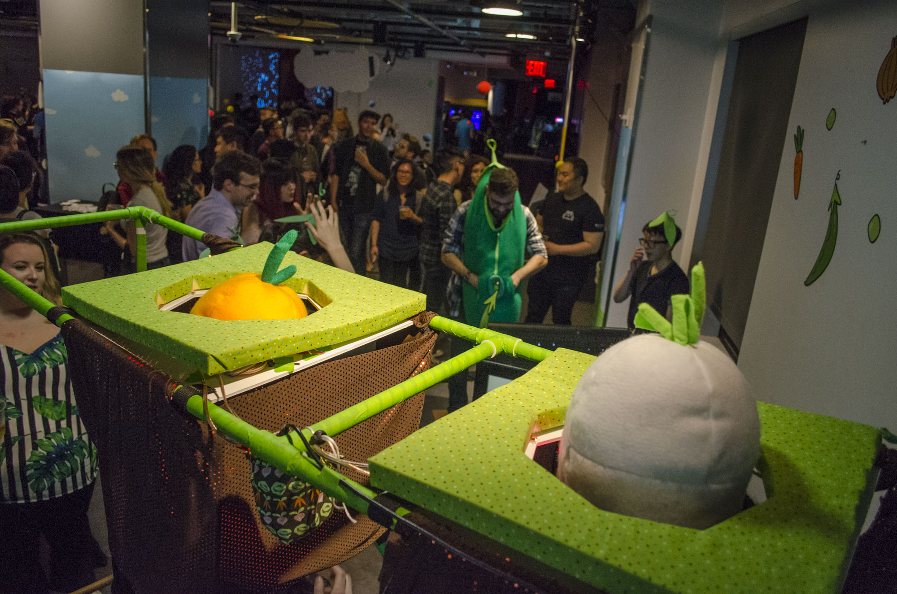
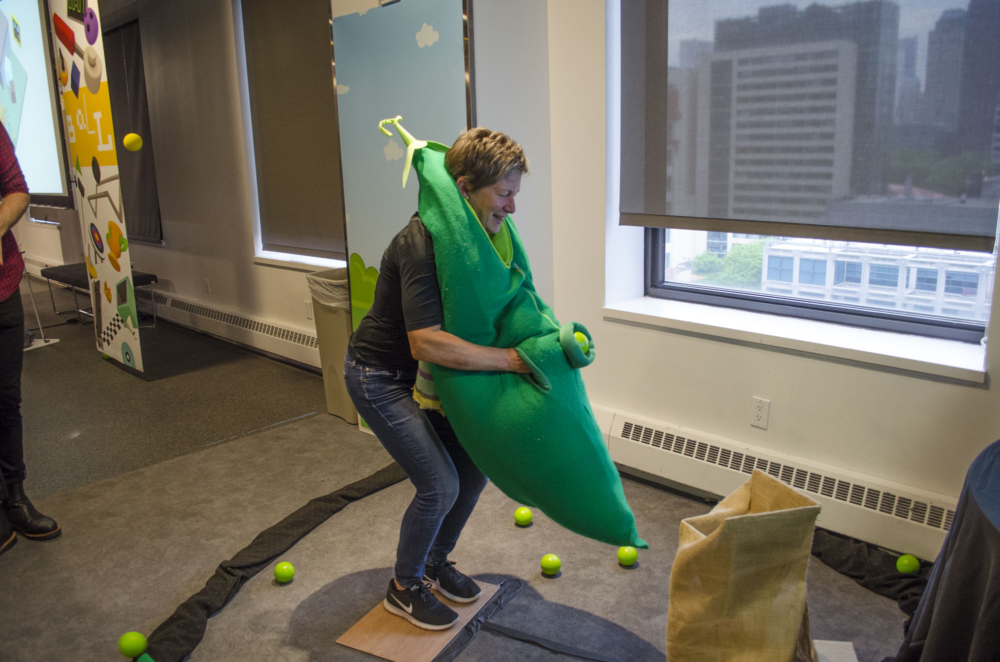
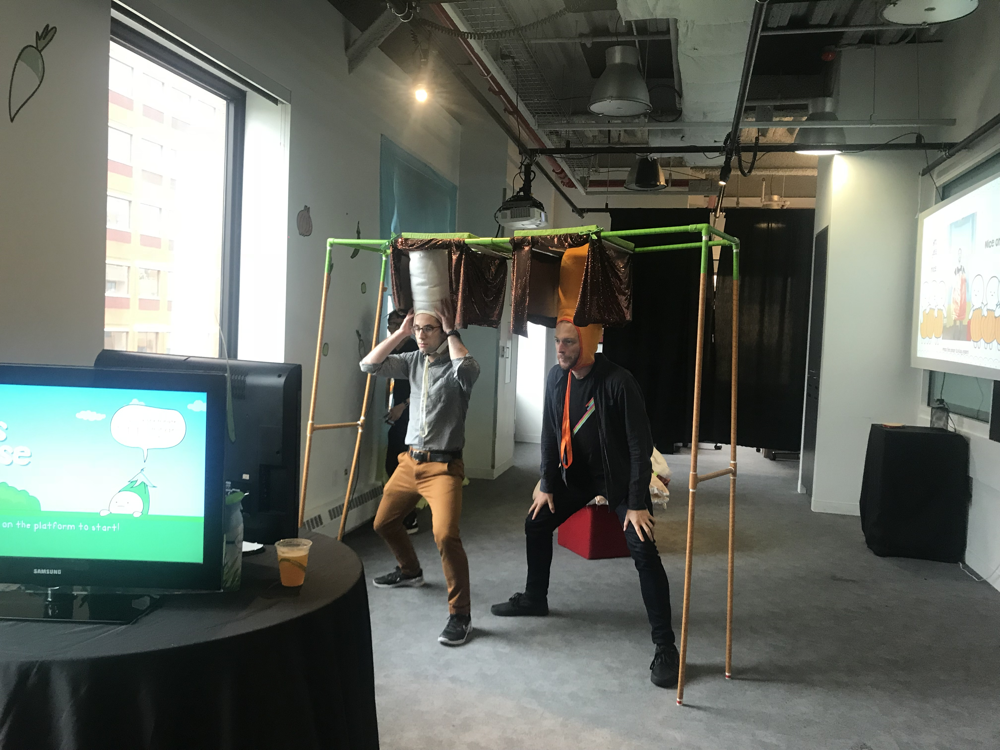

Garden Games is a set of three alt-control costume games where you become a vegetable. It includes carrots and daikon in Root Juice, a pea pod in Peas Please, and an onion in Onion Dance.
The vegetable costumes bring out an awkward physicality and push the social performative aspect of the accompanying games. This encourages touch, interaction, and exploration. Players get creative with their bodies and have fun getting intimate with their new vegetable appendages.
In each game, you get up close and personal with your new vegetable body in order to play the game and be the best vegetable.
The three games included are
Root Juice,
Peas Please, and
Onion Dance.
For a more detailed writeup of rules and setup click here:
Game Information.



Garden Games at the NYU End of Year Showcase
Root Juice -
gameplay video
In Root Juice, players wear tall daikon and carrot hats and must wrestle with their new height as they pop up to blend the perfect juice.
Peas Please -
gameplay video
In Peas Please, the player wears a pea pod and must explore its depths to launch as many peas as possible.
Onion Dance -
gameplay video
In Onion Dance, the player starts as a measly onion bulb and must reach out to grow layers and become an onion worth eating.